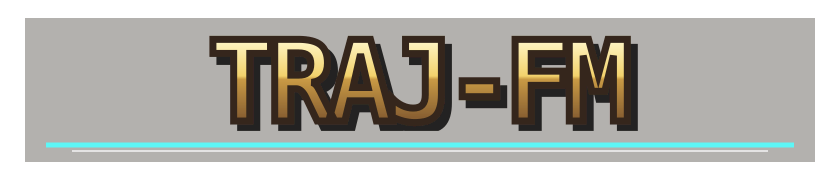

▰ JUKEBOX — TRAJWORLD
TFM
♫
♫
À L’ANTENNE
Chargement du disque…
Traj-FM · Sélection communautaire
0:000:00
*quand l’antenne n’est pas dans un arbre

Réglage de l’antenne en redstone…
[À COMPLÉTER — slogan de la radio]
FRÉQUENCE COMMUNAUTAIRE · 24/7*
À L’ANTENNE
Traj-FM · Sélection communautaire
LE MONDE EN 15 SECONDES
Les meilleurs moments capturés sur Trajworld.
LA GRILLE DES ONDES
PROCHAINE DESTINATION
SERVEUR COMMUNAUTAIRE
Les infos du serveur s’afficheront ici.
Connexion au relais de Trajworld…
FIN DE TRANSMISSION
UNE RADIO
POUR LES BLOCS
ET CEUX QUI LES POSENT
Merci d’avoir écouté.
À la prochaine nuit en jeu !